老板自己之前有Q5的A6L，现在事业做得不错，加上前面的两台车已用了准备5年了，所以想是不是换一台新车。他对奥迪还是情有独钟的，所以对18年新款的奥迪A8L多留意了几分。
空间上跟原来2014款A6L比，长度多20厘米达到5302mm，轴距多30厘米达到3128mm；那是相当给力的了，用来接送客户那是很有面子的了。
动力上那是强太多了，V6发动机，排量3.0，带T的涡轮增压可提供286匹马力；加上配置采埃夫8速变速箱，调教后动力充足提速也快。跟之前的A6L的2.0T来比，多了96匹马力，综合油耗也不见得高多少，行驶经济性应该还是可以的。
悬挂方面前面是上下多连杆，后面也是多连杆，悬挂软硬喝高低还可以调节；驱动方式是全时四驱，这样整体的底盘支撑，让车子跑起来有更好和更舒适的驾驶体验。
其他的主动安全和被动安全就不过多介绍了，这些都是配置齐全。钢圈就是20寸，胎面宽265mm，哇噻喔一条轮胎就可以去掉我的小半月公资了吧。
电子设备也很给力，单是中控台的大屏就可以让人觉得这车不一样了。可以用高端大气上档气来形容一点也不假啊，看得都很舒服。
内饰的用料和做工那是没得说了，配置了两个天窗，音响那是没得说，也是顶级的，比原来的Q5和A6L多4个小音响。
好了，分享一下老板看上的车是什么样子的。
A8L气场不错
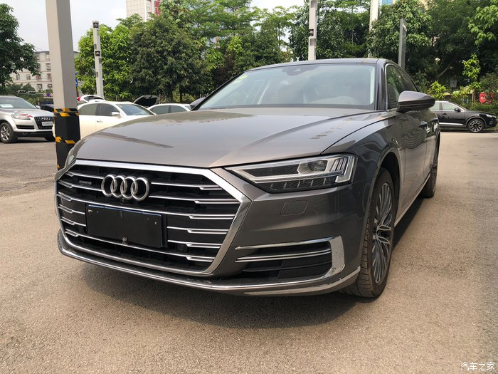
大气
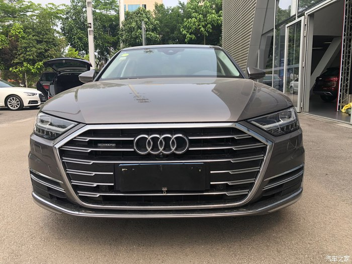
组合大灯
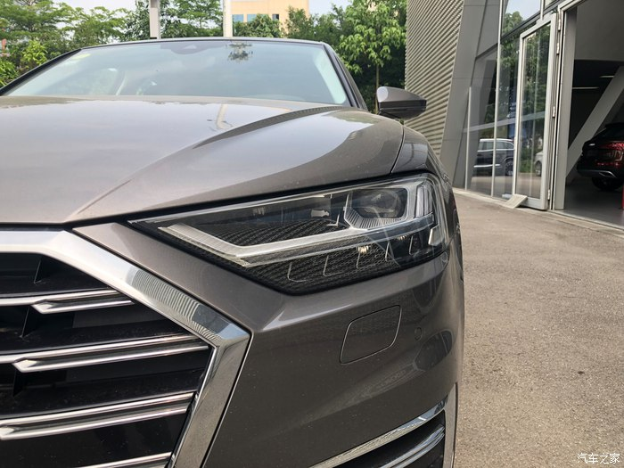
LED的光源
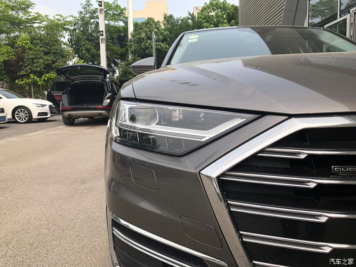
电镀饰条够靓了
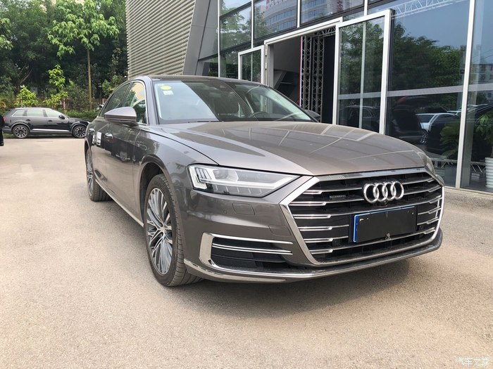
20寸大轮毂和轮胎
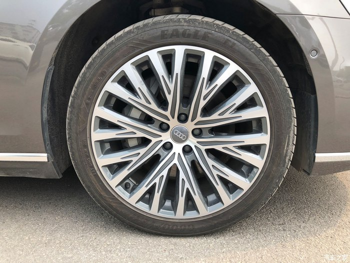
修长的车身
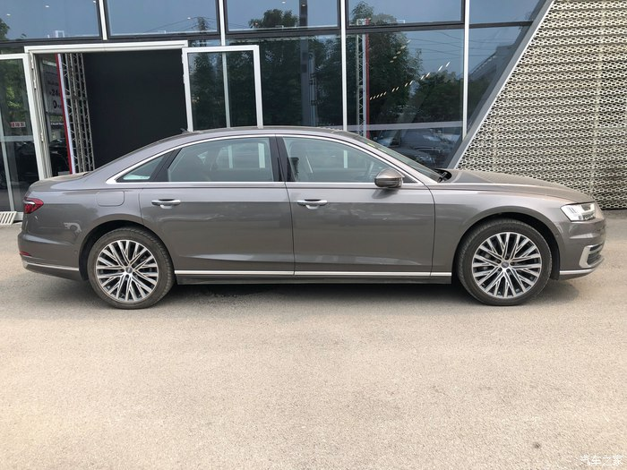
尾灯变得比旧款长
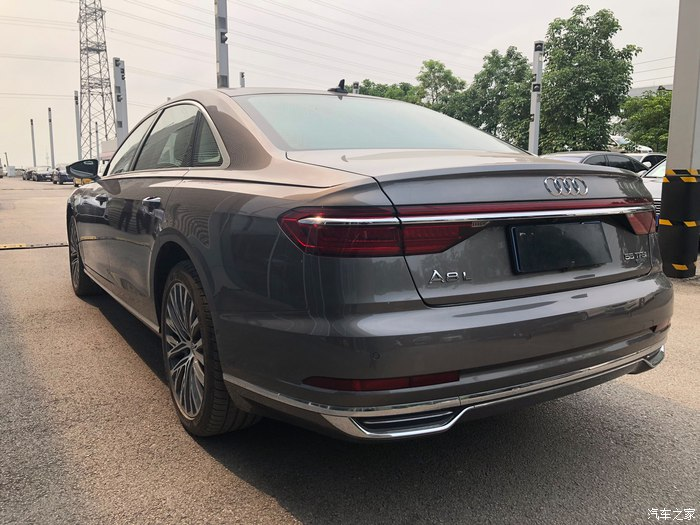
55 TFSI说明级别不低
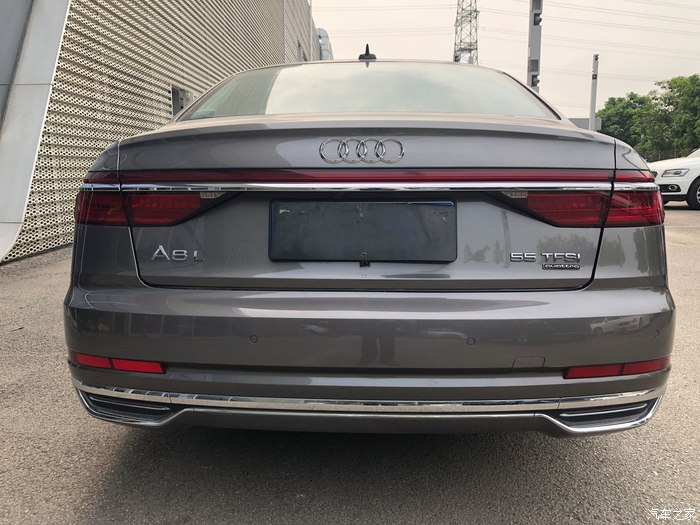
也是LED
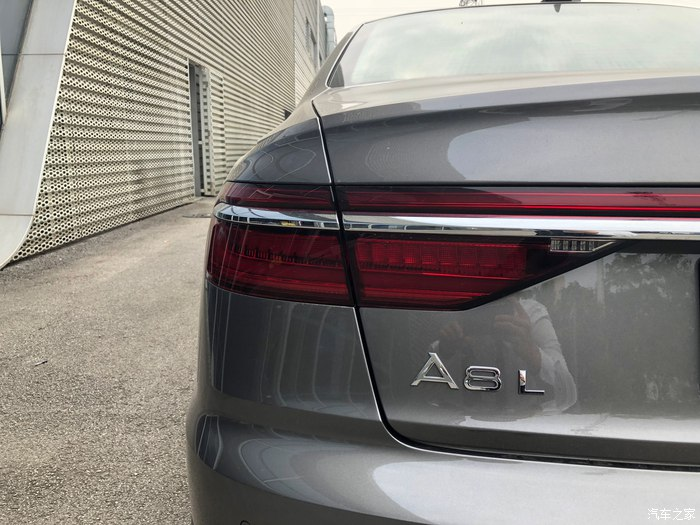
后杠也是双排气框罩
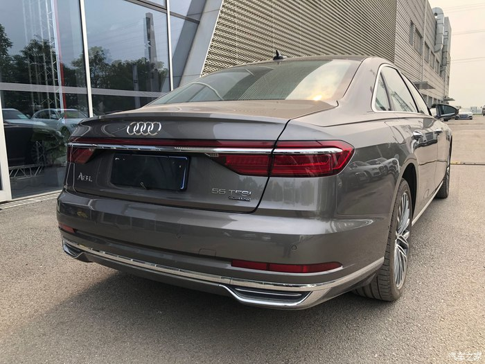
奥迪是造灯的
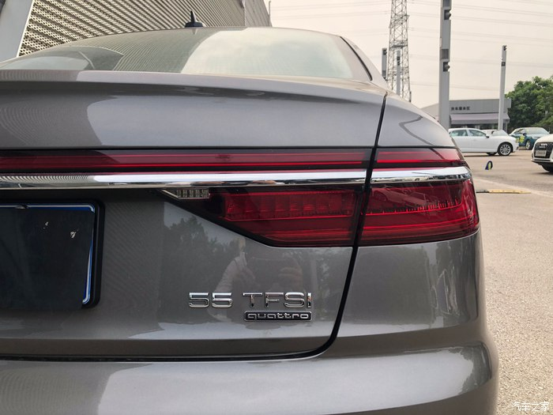
座椅配置高级
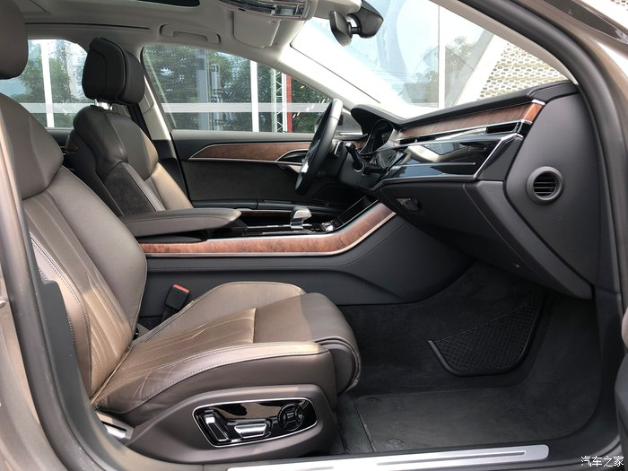
倒车镜也有小灯
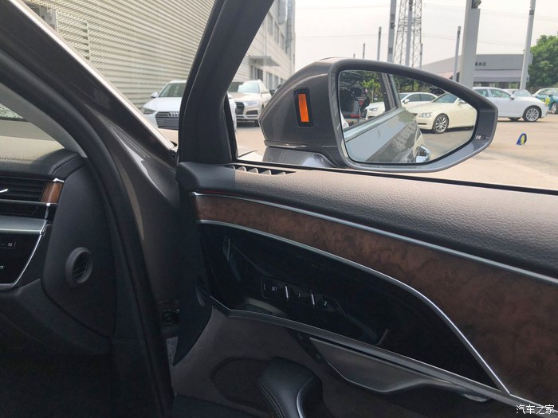
空间是真的好
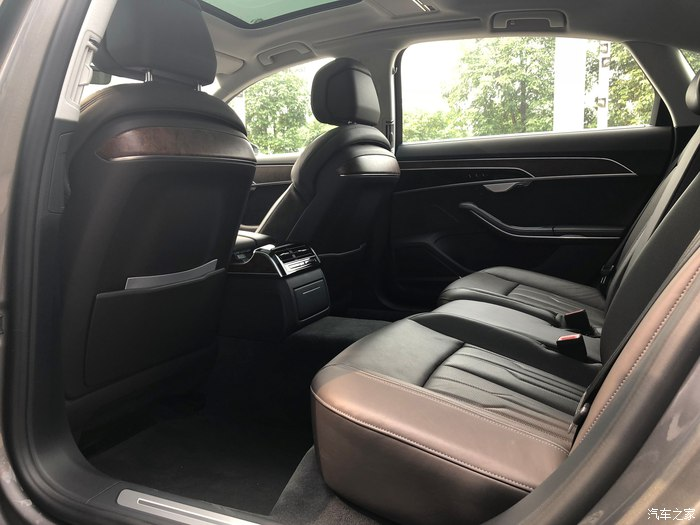
天窗两个
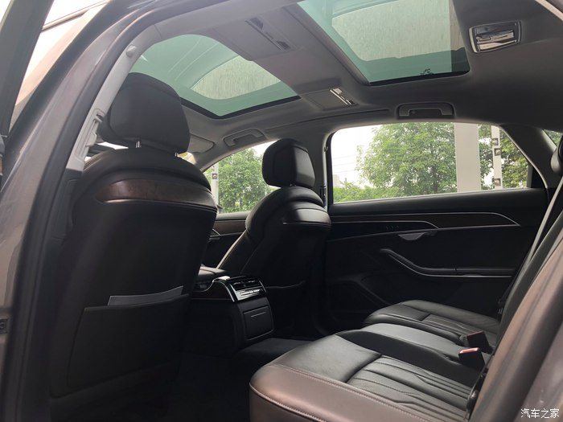
仪表和方向盘
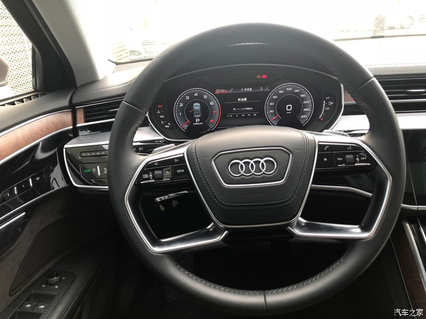
换档中控台
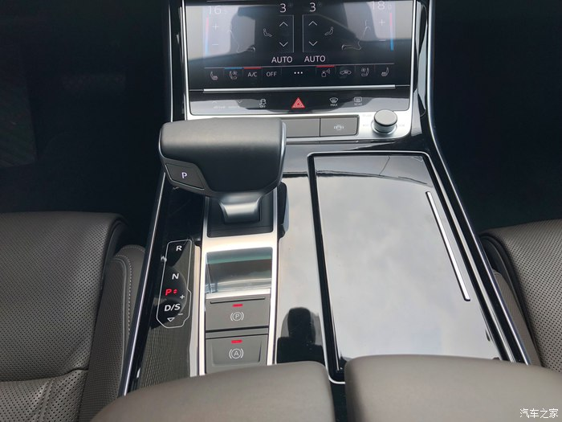
大屏很给力
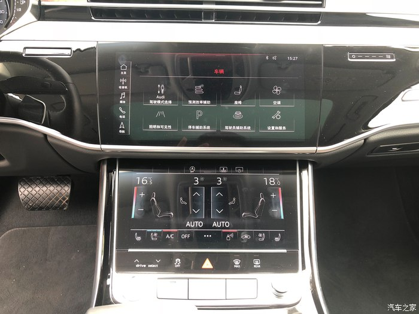
驾驶室和仪表台高端大气档次
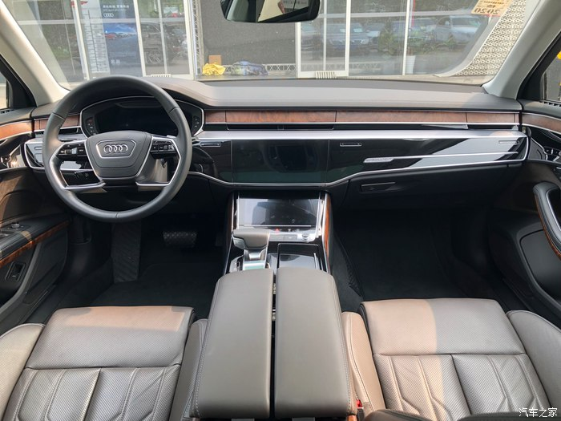
后排座的扶手箱都这么多功能
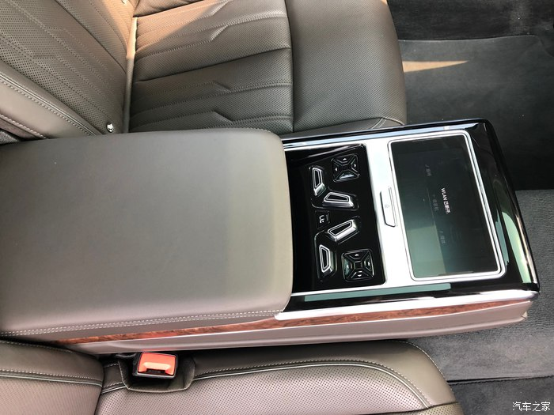
后排空间的中间扶手箱后空调出风口
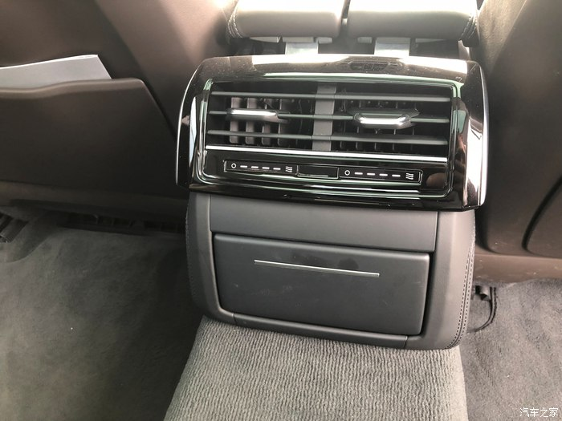
桃木装饰有内涵
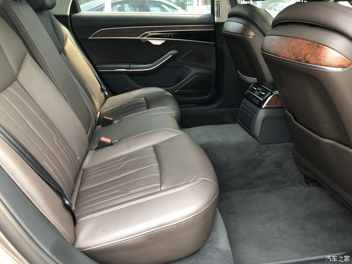
双天窗
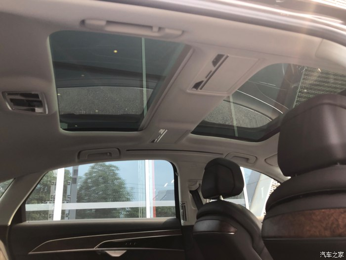
前室内顶灯总成
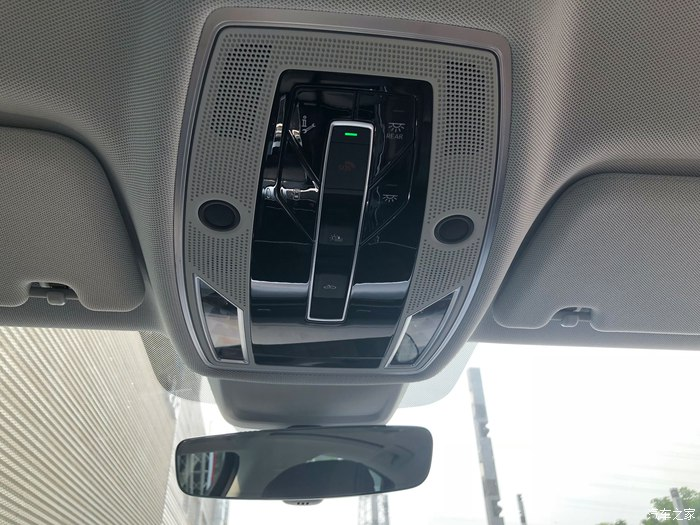
后排阅读灯总成
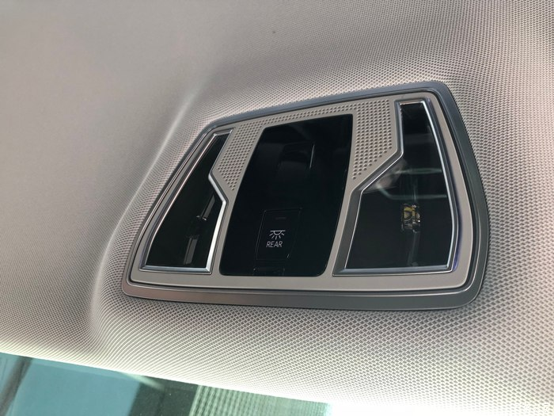
音响试一试
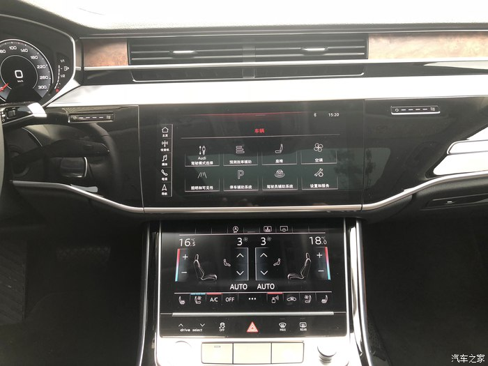
老板是很认真的看了看，又摸了摸啊。车是没得说了，品牌和配置都适合老板的商务要求，就看看价格上能给多少的优惠了。我自己觉得到了这个价格的车，综合安全、配置、做工、动力、经济性等各各方面都是很好的了，也代表了这个品牌的造车水平。就看老板自己的综合考虑了，我就负责把车开好就可以了。